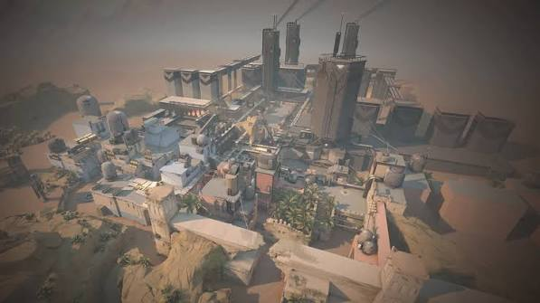
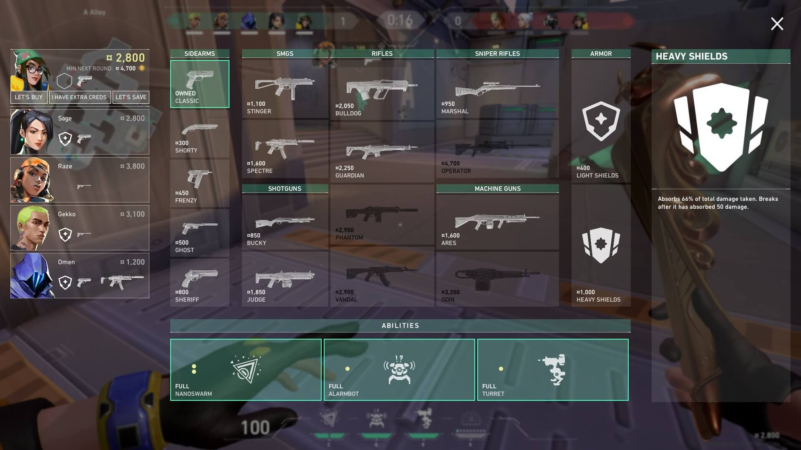

Step 3 of 3
Economics Guide
How credits, buy phases and armor work, and how a team spends its money across rounds.

Credits and round bonuses
- Earn credits every round. You receive a round win or loss bonus at the end of each round, and you earn credits for kills during the round.
- Win bonus. Winning a round gives your team a larger credit bonus than losing one.
- Loss bonus. Losing a round gives a bonus that grows with each consecutive loss and resets after a win, so a losing team gets more money to catch up.
- Save carries over. Credits you don't spend stay with you for the next round, so saving can set up a stronger buy later.
- Credits are personal. Each player has their own balance, so the team needs to agree on who buys which weapons and abilities.
Full buy
A buy phase opens at the start of every round. A full buy means you spend most of your credits on a primary weapon, a full shield and your abilities. It is the default when your team can afford its strongest kit.
Check the buy menu before you commit. It lists every weapon, shield and ability with its price, so you can see exactly what your credits cover.

Half buy
When your credits are limited, a half buy picks a cheaper primary weapon, such as one from the SMG or shotgun slot, and a light shield. You keep some credits for the next round while still fighting for this one.
Half buys suit rounds where your team has some money but not enough for everyone to buy the strongest weapons.
Force buy and eco
Eco round: a deliberate save. Buy only a sidearm, maybe a light shield or a cheap ability, and bank the rest so your team can afford full buys in the next round.
Force buy: a cheaper purchase made when the team can't fully afford a full buy but still wants to contest the round. It gives up some future money for a better chance this round.
Armor basics
- Armor resets each round. Shields are bought in the buy phase and are lost when you die, so check your armor at the start of every round.
- Shields absorb damage. Armor takes damage before your health, which buys you time to win the fight or retreat.
- Heavy shields cost more. Heavy shields absorb more damage than light shields and are worth it when you expect long fights.
- Armor is not a guarantee. Headshots do the most damage, so a clean headshot can still win a fight. Keep your crosshair at head height, whatever shield you bought.
- Guns first, shields second. Pick your weapon before your shield. A good gun with a light shield usually beats a shield with a weak gun.